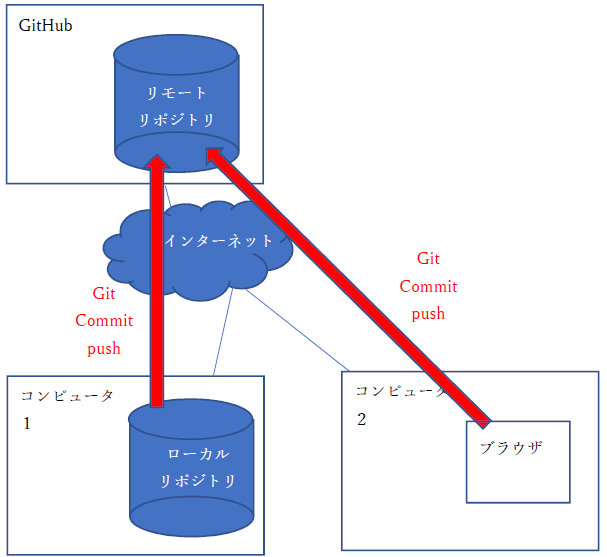

こんな楽しいものを今まで隠していてごめんなさい。プログラミングは楽しいです。頭から楽しい汁がでます。
コンピュータは自分で考えることができません。コンピュータに何かやらせるには、具体的にどうするのか人間が指示を出さなければなりません。 コンピュータが理解できるのは機械語だけです。機械語は”01001101・・・”みたいな感じです。これを人間が書くのは辛いです。そこで、ふつうは人間が読み書きしやすい形で指示を書いて（＊）、それを機械語に変換し,出来上がったものを使ってコンピュータを動かします。（＊）で使う言語をプログラミング言語といいます。 世の中には沢山のプログラミング言語があります。C, C++, Java, JavaScript, Lisp, Python, Ruby, COBOL, GO, Swift・・・ これらのプログラミング言語の内のどれかを使って、コンピュータに対する指示を書くことを『プログラミングする』といいます。また、指示を書いたものを『ソースコード』といいます。（『ソース』、『コード』、『プログラムコード』等と呼ぶこともあります。） なお、プログラミング言語にはそれぞれ得意分野があり、作りたいものに応じてどの言語を使うのか決めるのがふつうです。
ソースコードは英語と数式が混ざったような見た目をしています。これはあくまで、人間が読んだり書いたりするためのもので、ただの文字列です。 IDE（Integrated Development Environment／統合開発環境）という高級なアプリケーションを使って書くこともありますし、テキストエディタ（文章を編集するためのアプリケーション）を使って書くこともあります。 いずれにせよ、物理的なキーボードがついているコンピュータを使用するのが一般的です。 プログラミング言語たちには、それぞれ書き方の約束があり、それを言語仕様といいます。書くにも読むにも言語仕様を知らなければなりません。
うまいプログラムを書くには、この言語仕様のほかにも
ただ、全部勉強してからプログラミングするぞ！というのは良い方法ではありません。実際にプログラミングしながら、周辺の知識を吸収していくほうがよいでしょう。道は長いです。焦らずいきましょう。 必要な知識は膨大なので、この文書ですべてを説明することできません。この文書はとりあえず、入り口へ案内する程度のものです。 世の中にはプログラミングについて具体的な説明をしているサイトが沢山あります。Google先生に聞いてみましょう。例えば、ドットインストールではJavaScriptについて、動画で説明が見られます。書籍を参考にするのもよいです。
Scratchに触ったことがなければ、まずはScratchで何か作ってみましょう。
そんな貴方にはパソコン部ではjavascriptをおすすめします。 最初は“hello world“という文字列を画面に表示するのが習わしですので、やってみましょう。 テキストエディタを開いて、以下を打ち込みます。
<html>
<head>
<script>
console.log('hello world');
</script>
</head>
<body>
プログラミングは楽しいです。
</body>
</html>
そして、sample.htmlと名前を付けて保存してください。
このファイルをgoogle chromeで開き、12キーを押下してConsoleというタブをクリックすると、hello worldという文字列が表示されているはずです。
この例では4行目の
console.log('hello world');
がjavascriptの命令で、「Consoleにhello worldという文字列を表示せよ」という意味です。その他の部分はHTMLという言語で書かれています。HTMLで静的なウェブページを作ることができ、それに加えて、JavaScriptでブラウザ上でさらに色んなことができます。
プログラミング言語の一つです。 ブラウザがjavascriptで書かれた命令を実行することで、静的なHTMLには実現できないことができます。最近はnode.jsなどブラウザ以外でも動くみたいです。 文法としてはC言語に似ています。(おじさんの世代はまずC言語を学べと言われて育ったのです。) プロトタイプベースのオブジェクト指向言語で、C++等のクラスベースのオブジェクト指向言語とはその点が違います。 javascriptについて細かく説明してくれているサイトは沢山あるので、詳細はそちらを見てください。
オブジェクトを代入するとコピーはされず、オブジェクトへの参照が得られます。
var obj1 = {
aa : 1,
bb : 2,
cc : 3
},
obj2;
obj2 = obj1;
obj2.aa = 10;
console.log(obj1.aa);
上でconsoleに表示されるのは10です。
2項定理ってこんなんだったなぁ
\( (a+b)^n={}_n \mathrm{C} _0 a^nb^0
+{}_n \mathrm{C} _1 a^{n-1}b^1
+{}_n \mathrm{C} _2 a^{n-2}b^2\) ・・・
\(+{}_n \mathrm{C} _r a^{n-r}b^r \) ・・・
\(+{}_n \mathrm{C} _{n-1} a^1b^{n-1}
+{}_n \mathrm{C} _n a^0b^n \)
,で区切って数値を入力しください
下の空白部分を適当に（たくさん！）クリックした後、click to startをクリックしてください。
click to start
パソコン部員はblenderというアプリが得意です。これで作った3Dのモデルを表示します。
javascriptのライブラリThree.jsを使っています。
先輩部員、顧問と相談しましょう。
プログラムを作るには何日もかかるし、複数人で作ることもあります。そこで、うまいことソースコードを管理する必要が出てきます。2021年のこの文章を書いているときのバージョン管理ツールのデファクトスタンダード（事実上の標準）はGitです。
Gitにおいてソースコードを保管する場所を『リポジトリ』といいます。ソースコードをリポジトリに登録 (コマンド：git add)し、編集して内容を保存(コマンド：git commit)すると、変更履歴を見たり、ソースコードを前にcommitした状態に戻したり、またそれをもとに戻したりできます。
自分の作業しているコンピュータのリポジトリを『ローカルリポジトリ』、みんなが見られるサーバ等にあるリポジトリを『リモートリポジトリ』といいます。
リポジトリはコピーすることができます。(コマンド：git clone)。どこかのサーバにあるリポジトリAと、それを自分のコンピュータにcloneしてできるリポジトリBは変更履歴まで同じ情報を保持し、同格です。Gitは分散型のバージョン管理システムといわれます。
GitHubはこのGitを利用したサービスで、リモートリポジトリをweb上に作って、webブラウザ等からアクセスできるようにしたものです。
GitHub上の自分のリポジトリに、自分で作ったソースコード（カッコイイやつ）をcommitして、こんなの作れますよ！って自慢できるようになってください。
GitおよびGitHubの使い方については、きっと実際やってみないと感覚が掴めないでしょう。使って練習してください。ブランチという概念があり、これも使うと便利です。
上記はリモートリポジトリにソースを保存するイメージ。
※IDやパスワード的なものをソースコードを含めないこと！（不正利用されるとお金を請求されたりするよ！）
ちなみにgithubに存在する文書をwebページとして公開する機能があり、今見てるこの文書もそうして公開しています。
shirayanagi hiroshi
2021/4/29